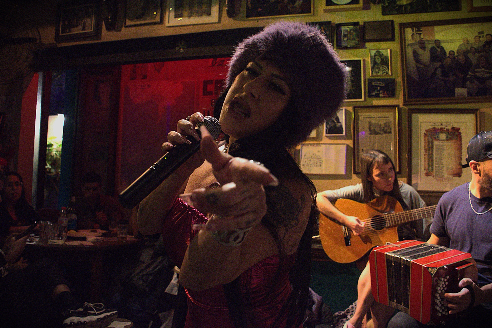
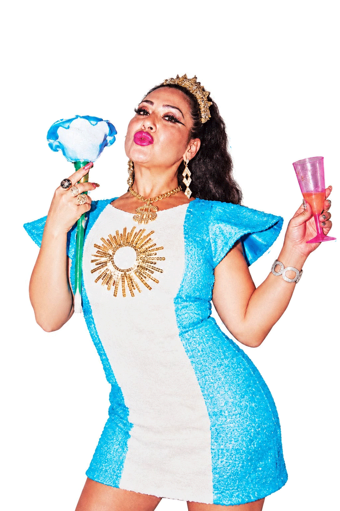

Lulú Tanguera
Lulú Tanguera es cantante, actriz e intérprete porteña con más de dos décadas de trayectoria. Desde sus raíces en La Boca construye un universo propio donde el tango se cruza con la actuación, el humor, la sensualidad y la irreverencia.
Ahijada artística de Tita Merello, recoge el linaje de las grandes intérpretes populares argentinas para transformarlo en un lenguaje personal, arrabalero y contemporáneo. Su discografía y sus espectáculos recorren más de veinte años de una artista en permanente movimiento.
Discografía


scroll ↓
Novedades
26 de noviembre
Lanzamiento de nuevo disco
En Club Social 911
Próximamente
Sección de Fans de Lulú en su página web
A fin de este mes vas a poder subir tus imágenes, comentarios y reviews de Lulú en su sitio web.
